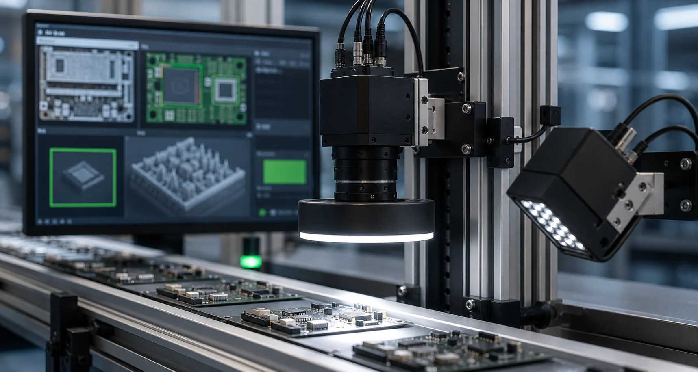

01 / CORE
Concept image
산업장비 제어 소프트웨어Equipment Control Software
PC·PLC 인터페이스, 모션과 로봇 연동, 통신, 운영 UI와 셋업까지 장비 소프트웨어의 전체 흐름을 설계합니다.
End-to-end control architecture across PC/PLC control, motion, robotics, communications, operator UI, and setup.
- Equipment Control
- Motion & I/O
- Robot Integration